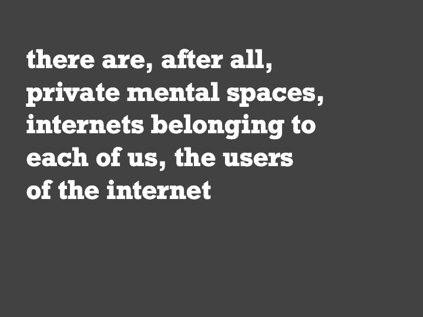

My home on the Indieweb
Author: Alek Tarkowski
Posted 25 December, 2021 in indieweb
Reading time: 4 minutes.
In 2002–twenty years ago–I created my first blog, called “Terminal internetyki”, the internetics terminal. “The terminal has the goal of monitoring and sociologically analysing changes caused by the development of new media”, said the “About” page. “We are working on launching the Polish branch of the Creative Commons project, I added on the margin.
The first post linked to a New York Times article about Joseph Turow, a researcher who decided to stop capitalizing the word “Internet”. Turow argued that the internet was not a “brand-name experience”, but a “part of the everyday universe”. The text also mentions Robert Kahn, one of internet’s co-creators, who was at that time defending “the right of people to use the word ‘Internet’ for what we think of as the Internet”, against some trademarking attempt by an IPR maximalist company.
This clearly struck a note. I summarized the article, and then added: “We can speak about the Internet, the internet or even the internets. Alongside the one medium, a great and common telecommunications spidernet, there are, after all, private mental spaces, internets belonging to each of us, the users of the internet”.

Reading this today, I’m surprised how close my thoughts were back then to what I find interesting and important today. And how very Indieweb it was, although I did not know the term at that time.
✦
That page was close to what feels to me like a golden standard of IndieWeb setups, largely thanks to an electronic engineering student that lived in the same apartment building as I did. Without him, I would not have my own instance of Movable Type blogging software, installed on a server that I owned.
The server rack was located in the communal basement of our building and its main goal was to manage an intranet that the student installed throughout the building. I remember hearing it humming when I went to the basement, for example to pick up Christmas decorations that we stored there.
This was a totally unusual setup for a housing cooperative in earlly 00s in Poland, and it gave us super cheap internet access. Bundled with it came email addresses in our own domain, and web server space. Today, we’d say the server gave us quite advanced digital sovereignty.
Several years later, things started falling apart, unfortunately. The student moved out of the building, and our infrastructure started falling apart. In 2006, I wrote my last blogpost on the site, calling it “a virtual overgrown garden”. I had problems logging in, and compared it with “opening a very rusty lock”.
I decided to close the site, hoping to one day “clean up that dusty attic and pack the data into little boxes”. (That hasn’t yet happened, in twenty years). It took me several years more to physically access the server and download the data. Today, the site is a folder on one of my external backup disks.
✦
I wish I was one of these people that started blogging in early 00s and then went at it, dilligently, for a few decades straight. I am not.
In 2006, as I closed “Terminal internetyki”, I started writing for a collective blog called “Kultura 2.0”, published by the Polish weekly “Polityka”. That no longer was the IndieWeb, but was a pretty good setup for that time. And one that, right now, is feeling increasingly dated. Blogging still feels right, but somehow mis-structured for the modern internet.
I’ve been meaning to build a homepage on the IndieWeb for a few years now. And for a long time, this task was elusive. I did face some technical challenges, but a basic Hugo + Github Pages setup is not that hard, with all the available tutorials. It is rather as if the weight of the modern internet, so biased against such an “indie” approach, exerted pressure on me.
And I knew all this time that I will not have the ideal IndieWeb setup. I was not planning to install my own server on the rack that probably is still standing there, gathering dust, in the basement. I have been willing to cut some corners, but at the same time knew, that I went to have the sense that I wrote the page myself, at least to some extent.
✦
And here we are, finally.
What you are reading now is built using the Hugo static site generator and a simple theme called Hugo ʕ•ᴥ•ʔ Bear Blog. I use Github Pages to publish the site. It lacks bells and whistles, which lets me understand what goes on in the site’s code - which feels to me like a good IndieWeb standard.